QuickFolders.org
| Home Installation Version History Premium Functions FAQ + Tips Support QuickFolders! Screenshots Bugs + Feature Requests quickFilters Menu On Top GDPR + Impressum |


Version History
For the list of latest changes click here. For Thunderbird 68, click here.
Latest News (15/04/2023) - Thunderbird 115 Compatibility
QuickFolders 5.15.2 is fully compatible with the latest version of Thunderbird (102.10) - and currently supports up to version 110 beta 4. I am currently working on fundamental changes for Thunderbird 115 which will be released in summer 2023 and has a completely new user interface "Supernova". This requires considerable work of rewriting all elements interacting with the main page (3pane) of Thunderbird (toolbar buttons, menus, folder tree) - this also includes drag and drop.
In my estimation, this work will take around 6 man-weeks. So it is very important that this effort is funded via my Add-on licenses. There are 2 license levels - please read the comparison chart to see which additional functions you get depending on your license. To download preview versions for Thunderbird betas or be informed about ongoing development on the new branch please leave feedback (or click the emoji button) at the Github issue 351. I am also discussing necessary changes to the UI, so please have your say there.
Thunderbird 115 is using the same system for permissions as the previous versions, and QuickFolders still has to use experimental APIs to achieve its full functionality. So you will see a message asking for full permissions. There is an article on Mozilla support explaining the detail.
In short: As Thunderbird follows Firefox which moves toward web extensions, a new technology has emerged that restricts Add-ons to use only managed entry points (APIs) for adding functionality - these are still largely incomplete as regards the many things Add-ons can actually add to the application. That's why Thunderbird allows using "experimental APIs", which is essentially a wrapper technology that allows (substantially modified) classic extensions to run on this system.
This also meant yet again splitting the code base for the older versions and having separate releases (it's not possible to combine both system in a single Add-on). Essentially new functionality will go into the newer versions of QuickFolders (6.0 and higher) whereas I back-port bug fixes and some selected functionality to the older versions of QuickFolders (5.15 and higher). Both versions will automatically update the correct user base as usual.
Thunderbird 68 support has ended on thunderbird.net
Unfortunately thunderbird.net does not accept updates for legacy versions anymore - they only support the new "Mail extension" format and our "mail extension with experimental APIs" which is a workaround for missing advanced features.
From of version 4.23 forward you have to install such legacy versions from the github releases page.
Major Features
Premium Feature: quickJump
A super quick way to find folders and Tabs by entering part of their name:
Click on the quickJump button (or use the configurable keyboard shortcut SHIFT+J
in QuickFolders Pro):
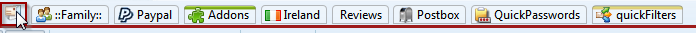
A Search box opens where you can type a folder name and hit [Enter]. Or hit the [Down] key
or mouse to select from the list of suggestions.
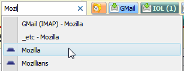
If exactly one matching folder is found Thunderbird will jump to it immediately. If multiple folders match a dropdown will show.
Selecting the folder (or tab) name will jump to the folder.
Select Find Folder from the menu again if you want to hide the search box.
Premium Feature: quickMove
Uses the same button for moving mails to any folder:
Simply drag some mails up to the quickJump button (or use the configurable keyboard shortcut SHIFT+M in QuickFolders Pro), and then type the name of the target folder. The name is shown in red to indicate that mails are going to be moved. Note that you can gather mails multiple times and even from different folders - the mails won't be moved to the destination until you click on the suggestion on the search box.

Start typing to get relevant folder suggestions:
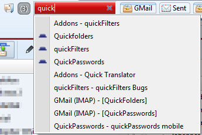
Clicking a folder name will move the dragged emails to the new destination and
complete the quickMove operation.
You can also use this button for jumping to a folder by clicking it (quickJump).
To access child folders of any given folder use the key "/" - just enter the first characters of the parent folder followed by "/". This will additionally give you the option to create new subfolders before you move the mail.
The Escape key will hide the red box temporarily. You can right-click the button
to display more options and the list of emails that are lined up for moving:
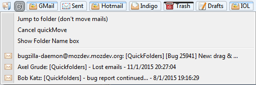
You can open the emails in a tab by clicking them.
Palette Types
It is now possible to select independent palettes for the different tab states
selected / hover / dragover / uncolored.:
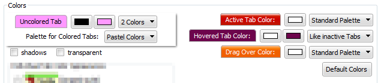
this way the signalling of important states (such as the current folder) can be made to stick out so it can be located much more easily.
Also the new architecture of palette options makes it easier to add different palettes in future versions.
Version Details
All dates are displayed in UK format: dd/mm/yyyy - you can request any version that is marked as not released or any old version listed; just send me a personal email from the quickfolders options dialog / on the Support tab - [(Jump to Screen Shot)].
-
Version 5.16 - 22/04/2023
If you can see this box then your QuickFolders Pro license has expired!
QUICKFOLDERS PRO - MAYDAYs SALE - RENEW FOR 25% OFF
Catch this 2023 sale offer which reduces a quarter from the price from April 21st to May 8th! Renew or extend your license and pay 7.50$ instead of 10$ for your renewed QuickFolders Pro license.
 You can extend or renew your license directly from QuickFolders - it will transmit your existing license key in order to
create the new license. Simply use QuickFolders Options / QuickFolders Pro tab and the Extend License button.
You can extend or renew your license directly from QuickFolders - it will transmit your existing license key in order to
create the new license. Simply use QuickFolders Options / QuickFolders Pro tab and the Extend License button.
Support the future of QuickFolders and keep enjoying unlimited Premium Features. Simply click on Renew License on the QuickFolders toolbar.
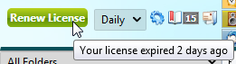
You can also extend your license (without losing a single day) by clicking on the Extend License button on the QuickFolders Pro tab up to 30 days prior to your previous license expiry.
As a thank you for my loyal supporters: if you missed the expiry date I will still give you a whole year in the renewal even if your expiry date is in the past.
QUICKFOLDERS PRO - MAYDAYs SALE
Save 33% on the regular price and support the QuickFolders project from April 21st to May 8th! This deal will only be offered for this limited time period, to give you too a chance to support the QuickFolders Project. QuickFolders needs to payroll improvements for Thunderbird 102 to be as fast and efficient as possible.
Support the future of QuickFolders and enjoy unlimited Premium Features. You can purchase a license from QuickFolders options, using the Licenses tab. It's super easy and helps future proof this Add-on. Use QuickFolders Pro on as many Thunderbird installations as you like as long as it has your licensed email address as a Default Identity.
Install the latest QuickFolders version and then click the Buy License item from the QuickFolders Pro tab on the Options dialog. If you prefer, you can also buy a license on the web shop directly: FastSpring Web Shop
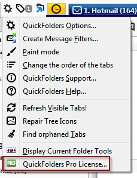 Go Pro! - MAYDAYs UPGRADE OFFER
Save 33% on the upgrade price and support the QuickFolders project from April 21st to May 8th! QuickFolders needs to payroll improvements for Thunderbird 102 to be as fast and efficient as possible. This deal is only available to QuickFolders Standard users within this limited time period. Treat yourself to the premium functions and help financing QuickFolders' future compatible with Thunderbird 102.
The regular upgrade price is around $9.00 plus taxes, this reduced price is $6.00 - check the shop site for your personal price depending on your region. A standard license or renewal of it now costs also around $6.00.
As a Standard license owner, you can upgrade your license to Pro level by clicking on the "Upgrade to Pro" button in QuickFolders Settings on the License tab:
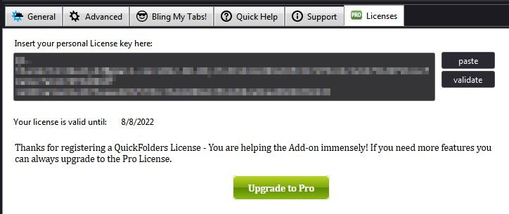
For a feature comparison between Standard and Pro please check this comparison chart.I am currently working on the conversion of the QuickFolders Addon for the new Thunderbird User Interface 'Supernova'. This will be implemented in the next major version of Thunderbird 115 in Summer 2023. It requires considerable work of rewriting all elements interacting with the main page (3pane) of Thunderbird (toolbar buttons, menus, folder tree).
You can read up on the current progress of this work here: issue 351 This work is exclusively funded by the sale of license so if you are interested in using QuickFolders in the future, please consider buying a license or renewing your license. Unlike a Windows Application, frequent work on the code of experimental Add-ons like QuickFolders is inevitable. I have kept this project alive for 14 years now and I would like to continue doing so in the future. Thank you for your kind attention.
-
QuickFolders now warns about license expiry 10 days beforehand. [issue 350].
-
News button will not be shown unless at least minor version number of QuickFolders is increased. But you can always read up on the latest changes via the tools menu item "Latest Update News..." - and used to be titled "View Splash Screen".
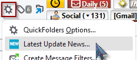 - Added pricing section to the buy license dialog. This explains that prices can be looked up via the browser without necessarily buying, by clicking the appropriate button on the screen.
- Fixed "Compact Folder" on current folder submenu.
- Corrected the Number of days left in license by rounding up.
Improvements
Bugs Fixed
-
-
Version 5.15.2 - 24/12/2022
-
Version 5.15.2 (published 24/12/2022):
The quickFilters assistant was triggered multiple times when dropping multiple mails to tab or multiple mails are moved using quickMove. This new version will move emails together, as long as they come from an identical source folder. This should prevent multiple assistant windows in the majority of use cases. [issue 335]
-
Version 5.15.1 (published 22/12/2022):
A regression in v5.15 caused all text in popup menus (subfolders / commands) to appear missing for most users. This was because of the default size of 0 being falsely applied as a literal value. [issue 333]
- [issue 329] Fixed inconsistent menu font size when dragging mail to a subfolders of a QuickFolder
- [issue 315] Removed the term 'Orphaned Tabs' in all User Interface texts
- Modifications to internal code for triggering the quickFilters filter assistant to avoid "monkey patching" (overwriting) Thunderbird internal functions. These changes are needed from the next version of quickFilters (5.7 and higher) onwards to avoid duplicate prompts for filter creation.
- [issue 328] Fixed: Using quickMove to move emails from different source folders didn't remove them from the menu
Maintenance Fixes
Improvements
Bugs Fixed
-
Version 5.15.2 (published 24/12/2022):
-
Version 5.14 - 14/11/2022
-
You can now set the icon color on the current folder with the custom background. This can be used to address coloring problems with third party Thunderbird themes. [issue 317].
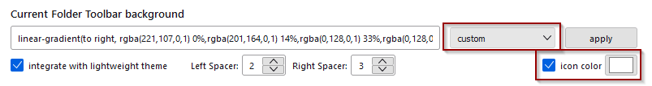 -
New Function for QuickFolders Pro users to mark folder as read and jump to next unread folder. [issue 320] Hold down
CTRL while clicking on the button "Mark Conversation as Read and jump to the next unread Email":
- Fixed: The Compact Headers Add-on painted over icons in Current Folder toolbar. [issue 314]
- Fixed a problem with missing quickFilters buttons on Current Folder toolbar. This requires quickFilters to be updated to version 5.6. [issue 316]
- Fixed: Tabs for Unified folders can falsely be reported as invalid, unless Unified folders are currently visible in folder tree. [issue 322]
Improvements
Bugs Fixed
-
-
Version 5.13.1 - 28/09/2022
- [issue 312] Fixed in 5.13.1: When moving an email to a submenu via the popup folder that shows direct child folders this can generate an empty duplicate without subject line.
-
[issue 306] New option to restore unread or force read status on messages when dragging them to QuickFolders.
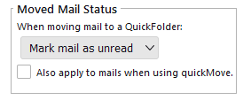 -
[issue 308]
quickFilters assistant will not fail anymore when moving mail to IMAP folders.
Here is a video that describes the process of creating filter rules using the quickFilters assistant - this is to automate moving mail
to your favorite folders.
- With the Add-on quickFilters installed, click on the button in the toolbar to activate its assistant.
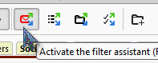 - Drop an email to a QuickFolders tab (or use the quickMove button).
- The quickFilters assistant will show up and give you a choice for creating rules to automatically
move similar mails.
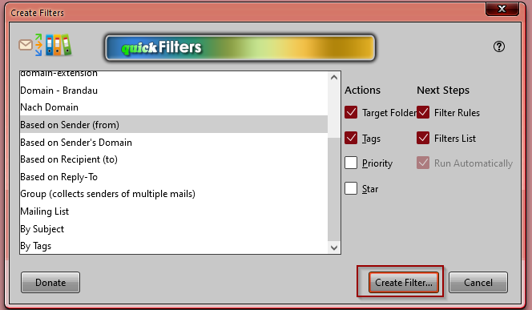
- With the Add-on quickFilters installed, click on the button in the toolbar to activate its assistant.
- [issue 309] quickFilters assistant will not fail anymore when moving mail to QuickFolders on IMAP. There used to be a problem with synchronisation while waiting for the IMAP server to complete the mail move operation.
- Increased max version to 106.0
Maintenance Fixes
Improvements
Bugs Fixed
Miscellaneous
-
Version 5.12 - 17/08/2022
Please note that QuickFolders is compatible with the latest version of Thunderbird (102) - if you get a message that says otherwise after updating from earlier versions (e.g from version 91) or if QuickFolders cannot be enabled with the blue slider, please remove it and reinstall it via "Find more Add-ons" on the Extensions tab of Add-ons Manager:
First try if you can enable QuickFolders using the slider:

If this doesn't work, then removing the Add-on via Thunderbird the Add-ons Manager will still retain your settings:
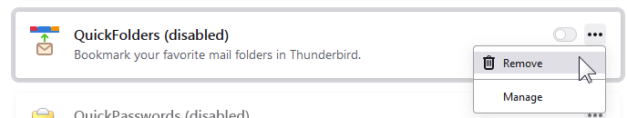In the Search box, enter the term QuickFolders, and press the Enter key:
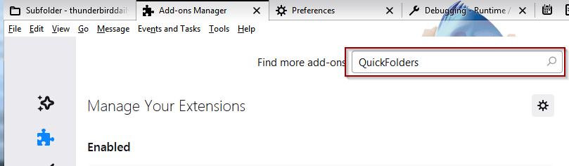Then click on the Add to Thunderbird button:
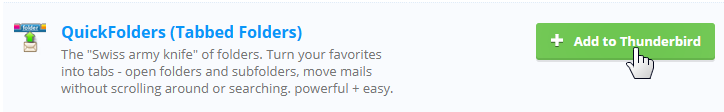
-
[issue 299] Going forward, QuickFolders does not open a version history tab by default. You can restore the old behavior in advanced settings:
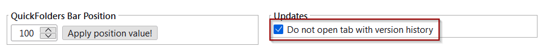 -
[issue 292]
Close quickJump box after using the
= shortcut key (to display recent folders). - [issue 291] Update Thunderbird's "Move to Again" and "Copy to Again" menu items when moving or copying mail through a QuickFolders method.
- [issue 296] Exchange account validation - you can now validate a license key even if the licensed email is configured for an Exchange account via 3rd party Add-ons such as Owl or Exquilla. This works from Thunderbird 98 forward.
-
[issue 297]
When using the search box during quickMove / quickJump and looking for parent folders you
can now enter composite names by typing the beginning of each word delimited by a space.
For Example you can now enter "mu fl/" to list all subfolders of a folder "Munson-Fletcher".
Valid delimiters of existing folder names are
- _ @ + & . andspace .
Maintenance Version 5.12.1 - 20/08/2022
Improvements
Bugs Fixed
-
-
Version 5.11 - 24/07/2022
Please note that QuickFolders is compatible with the latest version of Thunderbird (102) - if you get a message that says otherwise after updating from earlier versions (e.g from version 91) or if QuickFolders cannot be enabled with the blue slider, please remove it and reinstall it via "Find more Add-ons" on the Extensions tab of Add-ons Manager:
First try if you can enable QuickFolders using the slider:
If this doesn't work, then removing the Add-on via Thunderbird the Add-ons Manager will still retain your settings:
In the Search box, enter the term QuickFolders, and press the Enter key:
Then click on the Add to Thunderbird button:
-
[issue 283] Fixed: Significant slowdown of Thunderbird 102 with QuickFolders
There is some inefficiency in Thunderbird code for the folder tree which can be exacerbated by QuickFolders. I have removed as many function calls as possible without impacting on functionality. On startup some context menus have to be generated for efficient drag+drop; this is now postponed to a later stage to yield some processing time to the User Interface.
- [issue 279] Fixed: Thunderbird 102 - current category is not remembered / selected; in this solution I store the current category of each tab (folder and messages) whenever a tab is opened / moved or closed. This information is only stored for the last Thunderbird window that is closed.
- [issue 280] Customized folder tree icons stopped to work independently of QuickFolders tabs with icons. Custom icons are now back!
- [issue 287] Fixed the removal of invalid (orphaned) tabs through the tool menu command "remove invalid tabs". Also renamed it for clarity: this used to be called "find orphaned tabs"
- [issue 284] Recent folders menu doesn't show or takes a very long time in Thunderbird 102 - There is some inefficent code in Thunderbird 102 at the moment, so I have started to use their own internal function to generate this; I am hoping there will be some improvement added in Thunderbird itself in a later version and will remind the core team.
Improvements
Bugs Fixed
Known Issues / Work in Progress
-
-
Version 5.10.3 - 14/07/2022
QuickFolders is now compatible with Thunderbird 102, the official new version for 2022 / 2023. To help fund this Add-on for the next year and the unavoidable changes necessary to switch over to an API based approach, please buy a QuickFolders Pro license
-
[issue 281] this maintenance version will be able to reconstruct tabs after upgrading from Thunderbird 91 to 102 even if the server and username have been modified due to bug 1573690. The previous version failed with reconstructing these on IMAP folders.
To automatically rebuild (and avoiding invalid tabs) is only possible if 5.10.1 was previously run on an older profile (Thunderbird 91 or older)
If you already upgraded to Thunderbird 102 previously and still have invalid tabs, you can follow the detailed instructions at the last comment on [issue 281]
- [issue 283] Thunderbird 102 is severely slowing down compared to Thunderbird 91 with QuickFolders installed. I am currently working on a permanent solution - if you would like to test preview versions you can download them at the Github issue linked above.
-
[issue 281] 5.10.2 - this maintenance version will be able to reconstruct tabs after upgrading from Thunderbird 91 to 102 even if the server and username have been modified due to bug 1573690. To successfully reconstruct (and avoiding invalid tabs) is only possible if 5.10.1 was previously run on an older profile (Thunderbird 91 or older)
If you already upgraded to Thunderbird 102 previously and experience invalid tabs, you can now generate troubleshooting information via right-click QuickFolders Commands / Tab Specific Properties... This will copy the assumed account and the (invalid) folder URI to the clipboard.
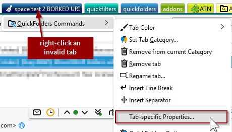For reference you can click on any real folder in the folder tree and then SHIFT+Click on the QuickFolders tool icon, then select Debug / Copy current folder info! This will copy the account and correct expected URI to the clipboard. By comparison of these data points it I can fix your folders through exporting the folder configuration and then text search+replace the differing URIs (or by simply inserting the correct account)
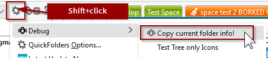Detailed instructions can be found at the bottom of: [issue 281]
- Fixed the missing close [x] icon on the advanced tab properties panel, which was hidden by style changes in Thunderbird 102.
- Fixed icon coloring for the tools and QuickFolders Command menus in dark mode (Thunderbird 102).
- [issue 281] 5.10.1 - this maintenance fix stores the account id for every tab. When upgrading to Thunderbird 102, this can potentially rename the servers due to bug 1573690 - then the account can be used for reconstruction of invalid folders. I am currently working on code that can help in fixing this problem automatically.
- Fixed icon spacings in folder popup menus in Tb102.
-
Increasing maximum TB version for next ESR - Thunderbird 102.* is planned to be supported from now on.
Also increased minimum version to 92.0 - because of new APIs 78 will not be supported with new features / bugfixes.
If you consider updating to Thunderbird 102 please make a backup of your prefs.js - Thunderbird can potentially generate invalid tabs, and this can be repaired much more easily by knowing certain server settings that are stored in prefs.js preceding migration. See [issue 281] for detailed information!
- [issue 272] Implemented new folder listener interface. The new version of Thunderbird implements a different folder listener interface. This meant a lot of functions (such as updating URLs when renaming folders and updating their connected tabs or updating unread counts on the tabs) were broken.
- Fixed repair folder code.
- Fixed support site links in Options Dialog.
- [issue 263] If Preferences are open in inactive Tab, clicking the options button now activates it.
- Added title to preferences tab
- [issue 265] Reading list: If an email cannot be found due to an invalid / deleted folder, QuickFolders wasn't displaying the search dialog.
- [issue 262] Fixed: Recent folders on Navigation Bar (Current folder toolbar) outdated when dragging emails
- Fixed: support mail to... description in options dialog
- [issue 268] Fixed: When clicking the Current Folder Bar, it showed an old list of subfolders
- Removed legacy settings dialog and associated menu item
- Removed legacy code (supportsMap)
- [issue 281] Updating to Thunderbird 102 can generate invalid tabs - make sure to backup prefs.js before updating in order to correct this problem more easily. Some accounts in your profile may be affected, so it is a good idea to mitigate this problem.
Maintenance Version 5.10.3 - 14/07/2022
Known Issues
Maintenance Version 5.10.2 - 07/07/2022
Maintenance Version 5.10.1 - 05/07/2022
Version 5.10 - 12/06/2022 - Thunderbird 102 Specific changes
Improvements
Bugs Fixed
Miscellaneous
Known Issues
-
-
Version 5.9.1 - 05/04/2022
-
Simplified recent folders menu behavior for keyboard navigation.
[issue 254] The new [=] shortcut key of quickMove/quickJump showed an arrow to visit child folders, which meant that the folder itself could not be opened without mouse, which impeded the workflow.
I have decided to instead not show subfolders for these recent folders as it doesn't add much value for what essentially should be a repeat operation. I have also extended this to the other recent folders menus (e.g. on the recent folders tab).
One can still restore the old behavior (of showing subfolders) by setting the config setting extensions.quickfolders.recentfolders.subfolders = true. To do this you can open QuickFolders General Settings and right-click the Recent Folder Tabs checkbox:
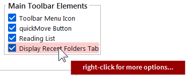 - [issue 252] Fixed: Tabs with invalid folder address can break search results. This can happen if you exclude accounts from the search after recreating a profile with different spelling.
- [issue 255] Fixed: CTRL Right-clicking on the active folder can create multiple instances of the folder commands submenu.
- [issue 241] using quickJump / quickMove via shortcut - hitting Enter will now always select the last successful location (even when the name is ambiguous) and not the top item of the menu. To use the first item of the menu using Enter the menu hast to be visible - either by starting to type or pressing arrow-down.
-
[issue 242]
Use '=' key for recalling folders from recent quickMove / quickJump operations
When using the quickMove or quickJump search box you can now access folders of its previous jump / move operations by typing "=" as the first character.
- [issue 236] Convert options dialog to pure HTML. Amon other things, this fixes the color pickers that have stopped working on Mac. Long term, all Dialogs and User Interfaces need to be converted to HTML to become future proof and pure API based. There are still things that cannot be done with HTML right now (such as folder dropdowns that aren't cut off at the toolbar borders), so this is an ongoing effort for the predictable future.
- [issue 232] Fixed: When Adding a category to a tab, another category may be replaced
- [issue 235] Fixed: quickJump may fail if "Compact mode" in folder tree is enabled.
- [issue 220] Fixed an issue with license validation (alias identity support).
- Fixed "change order" dialog.
5.9.1 - Maintenance Fixes - 05/April/2022
This maintenance version will be released shortly.
Improvements - 30/03/2022
Bug Fixes - 30/03/2022
-
Simplified recent folders menu behavior for keyboard navigation.
-
Version 5.8.3 - 03/11/2021
- Fixed in page links for users with licenses! Before licensed users were directed to the top of a page instead of the correct location (such as the feature comparison list or current version info)
- Improved speed of license validator for Thunderbird 91.2 and later.
- Improved readability for menu items on (license-) restricted tabs.
Version 3.8.3 - Maintenance version - 03/11/2021
- - [issue 5] [issue 67] [issue 77] [issue 105] Fixed: Long folders menu scroll issues - when the subfolders list of tabs were too long to fit on screen, dragged mail couldn't be dragged down into the clipped off list. The menu did not scroll down.
-
[issue 205]
When clicking "get Messages" from any tab, QuickFolders used to also jump into the folder.
This behavior is actually not desired, as you may have filter rules defined which remove mail from the Inbox
so jumping into the Inbox is not useful when new mail is downloaded.
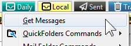 - [issue 191] Support large icon in QuickFolders toolbar buttons for high resolution displays.
- [issue 211] Fixed: move Folders in quickMove fails in Thunderbird 91. You can now again drag (multiple) folders from the tree to the quickMove button in order to relocate them. Or use the Shortcut Shift+M if you have a QuickFolders Pro license.
-
[issue 209]
Fixed: Tabs in Options Dialog became illegible in Thunderbird 91 when using
dark themes with bright text.
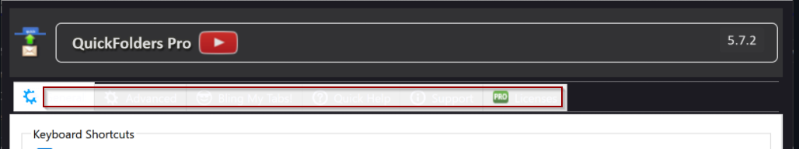 - [issue 203] Fixed: When the quickFilters Add-on activates its assistant, all icons on left to the tabs on the QuickFolders toolbar turned white.
- Fixed: In Thunderbird 91, background area behind current folder toolbar does not show correct background color from lightweight theme, even when lightweight support is enabled.
- Fixed: The History Tab was not displayed anymore when updating QuickFolders.
- [issue 204] WIP - Thunderbird 91: Background of QuickFolders toolbar doesn't support some themes when set to transparent
-
[issue 208]
Upgrade from TB 78 to 91.1.2 sometimes leads to invalid / "orphaned" tabs.
For the moment, you should be able to resolve these by clicking a tab with the "broom" / invalid icon
or by running the tool command "Find Orphaned tabs.".
Should this not give the desired results, then you can export your tabs via the license tab or on the Advanced tab using the [Copy Tabs] button and send me the file so I can help you fix this. - [issue 217] Tools Menu icons black in dark themes - Win10
QuickFolders 5.8.2 - Maintenance Version - 21/10/2021
Improvements - 5.8.1 - released 18/10/2021
Bug Fixes + Miscellaneus - 5.8.1 - released 18/10/2021
Known unresolved issues / Work In Progress
-
Version 5.7.2 - 04/09/2021
- Fixed in 5.7.2: When the quickFilters Add-ons activated its assistant, all QuickFolders icons on left to the tabs turned white.
- Added max version (Thunderbird 91.*) as mandated by new policies on ATN.
- [issue 199] Fixed: when looking for parent folders using the syntax parent/parent/searchfolder, parent folders with name being only a single character long were not included.
- [issue 197] Instructions on empty toolbar get duplicated on folder change.
- Removed "workaround" experimental APIs (notifications, accounts)
- [issue 187] Implemented a QuickFolders Standard License. Apart from the unpaid version, there will be now two different licenses, QuickFolders Pro and Standard, and the unfunded version will have a number of restrictions. Most importantly, no more than 10 tabs are supported without any license. This is necessary in order to fund ongoing and future work so that the Add-on won't be lost to all users when Thunderbird moves away from experimental APIs. Standard Features will be listed here. Read the new comparison chart to see which functions you get depending on your license.
-
[issue 114] Make QuickFolders compatible with Thunderbird 91 (ESR 2021/22). This is the list of issues found and fixed so far:
- Fixed the missing (and badly styled) [Buy License] button at the bottom of the options dialog. this is done by loading a separate style sheet link element into the shadow DOM.
- Fixed: showing the debug settings (and other advanced settings) via a small window that filters "about:config" stopped working in Tb91.
- Fixed: missing icons on sliding notification bars
- Removed deprecated fixIterator constructs
- [issue 189] Fixed: No longer able to move a message by dropping it on a quick folder tab the function copyMessages was renamed in Tb91
- [issue 190] Fixed dragging the envelope from current folder toolbar (Navigation bar)
- Simplified and improved splash screen.
- [issue 184] Update Notice - [What's New] button was badly visible when using different QF theme than flat style.
- [issue 166] 3rd party themes - Current folder toolbar colors are incorrect until Refresh visible tabs command.
- [issue 186] Theming make some items in options screens hard / impossible to see - improved visibility of dropdowns in options screen when using dark (and third party) themes.
- [issue 185] On installation / sometimes restart or update of _other_ add-ons category is reset to "all".
- Ongoing work of Rewriting code to use APIs instead of Thunderbird's internal functions see [issue 147] for up to date detail.
- Removed obsolete rsa code module
- Default event for popupmenus changed from click to command to better support keyboard only navigation. [extensions.quickfolders.debug.popupmenus.folderEventType]
QuickFolders 5.7.2 - Maintenance Version
QuickFolders 5.7.1 - Maintenance Version - 28/08/2021
5.7 - released 10/08/2021 - Improvements and Important Changes
Bug Fixes + Miscellaneus
-
Version 5.6.6 - 11/07/2021
-
[issue 177]
Fixed: Unreliable search if
space and- characters are combined in the search string - [issue 174] Main QuickFolders toolbar was hidden in single message tabs by default. Changed to being visible by default and added a setting to QuickFolders General settings.
- [issue 176] Hide instructions on how to set up QuickFolders at startup (for users who already have set up tabs)
-
[issue 155] Significant new search features have been added to the quickMove / quickJump function. For help on these, you can now click the [?] symbol to the right of the search field.
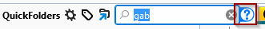Support entering multiple words in a search string to find longer folder names that are composited, such as "Fred.Flintstone" "Invoices June 2020" "Research+Development". These can now be found by entering the starting letters of the words within the folder name, in any order. e.g. "f f" "2020 inv" "Dev Res".
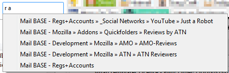The following characters are regarded as word boundaries and don't need to be typed:
_ . - + & @
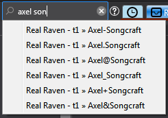This can also be combined with the parent folder syntax by entering the parent folder start followed by a forward slash
/ :
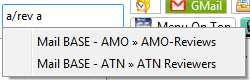The new character
> can be used to skip any part within the path and if you do not know their order within the folder hierarchy. -
When the search box is opened there is a new button to display a help panel:
-
The update Splash screen with the translated list of new features which used to be opened on update will from now on not be displayed automatically anymore. Instead there is a message on the QuickFolders button - click it once to read the latest news when you want.
The splash screen can also be re-opened again from the tools menu: 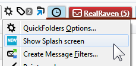
- Improved overall performance for typing by optimizing the keyboard listener that handles global shortcuts.
-
[web extension migration] Improved many functions that worked via accessing the "most recent Thunderbird window" and replaced them with event notifications that propagate to every window. This uses the Notification Tool library and the background script (a mechanism of the new API based "mail extensions" model).
This way all Thunderbird windows (if you work from multiple windows) will be updated correctly when doing one of the following actions. All these now work simultaneously and update in multiple Thunderbird windows.
- rename a tab
- move a tab positionto a different position
- delete a tab or remove it from or add it to a category
- change the layout of all QuickFolders toolbar elements from the options dialog (themes, colors)
- rename QuickFolders categories
- change the theme / buttons of the Current Folder Bar
- change options of where to display the Current Folder Bar (main window, message tab, single message window)
- changes to the license when entered / validated
- unlocking features such as the advanced / tab-specific properties when a license key is entered
- [issue 172] Fixed (in v5.6.5): quickMove result paths are only showing last 2 folders in path when only a single search word is entered.
- [issue 150] Unwanted new line characters "\n" were displayed in some strings in version 5.5.2
-
[issue 167]
Fixed: Unreadable colors of QuickFolders toolbar font and Navigation bar icons in Linux.
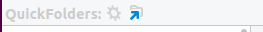
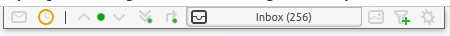 - Added instruction text on empty toolbar which was missing since Thunderbird 78 migration: 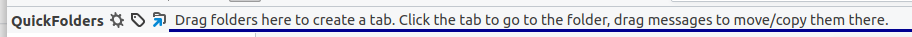
- [web extension migration] Licenser code migrated into background script.
- Added wrench button on Add-ons Manager to access settings.
- Other ongoing work of Rewriting code to use APIs instead of Thunderbird's internal functions see [issue 147] for up to date detail.
- Moved accounts + permissions code into my own experimental library as users were not prompted to auto-updated due to added permissions.
Maintenance Items - 5.6.6
Improvements
Bug Fixes + Miscellaneus
-
[issue 177]
Fixed: Unreliable search if
-
Version 5.5.2 - 28/04/2021
- [issue 148] quickMove: parent folder containing an underscore not suggested as parent if typed from fully this is a regression caused by changes in [issue 135] which allows for entering parent names by entering text within the string if that starts with an underscore or space - e.g. to find all child folders of "001_Test" you could just type "tes/". The regression caused it not to be suggested when typing "001_tes/" as it only would evaluate the substrings "001" and "Test" as possible parents.
- In some locales the character » is replaced with encoded unicode entry \u00BB in Create subfolder menu item
- In Thunderbird 89, the options button was not displayed in Add-ons Manager.
- Hotfix: [issue 144] Fixed: Mark folders + subfolders read stops at first generation (direct child folder) mails and potentially may have affected parent folders, too.
- Fixed: The tool menu item "Change the order of tabs" did not update the toolbar after clicking Ok. To make changes visible one had to click "Refrehs Visible tabs"
- Rewrote the legacy style localization to use the modern method which is a prerequisite for converting the Add-on to a "mail extension" in the future.
- Version 5.5.1: Completed Hungarian, Simplified Chinese and Catalan locales.
- [issue 135] quickMove / quickJump: When using "/" for parent folders searching for substrings should work better... The Search algorithm now recognizes Underscore _ and Space within folder names so that parent folders with prefixes such as "01_test" can still be found without knowing the number (type "test\subfoldername" to get a match in this example).
- [issue 134] Feature Request: Escape key to "Cancel quickMove" completely. Before this change, Cancel would hide the search box but keep the list of mails queued to be moved so that more items could be added later. If necessary, the old behavior can be restored in the Advanced search settings dialog.
-
[issue 132]
In a single message tab, quickMove used to redisplay the mail after moving it with quickMove.
This behavior has now been changed on request to go to the next email.
If necessary, this new behavior can be changed via the advanced search settings button
in the Single Message Tab box on the QF Pro settings tab.
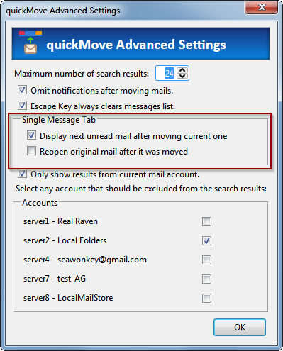 - Increased maximum subfolders in a dropdown menu from 100 to 250.
- [issue 136] Fixed: There were no folder suggestions during quickJump / quickMove while viewing mails in a virtual folder view (such as search results / or after open message in conversation). This was a side effect of changes from [issue 57].
- [issue 140] Fixed: Restriction to current server unexpectedly suggests creating new subfolder on excluded accounts. This only happens if there are no other matches found for the folder search pattern.
- Changed folder tree shortcut from F7 to F9 (consistent with Thunderbird 68). Push F9 to make the folder tree visible or quickly hide it.
Maintenance Items - 5.5.2
Maintenance Items - 5.5.1
Improvements (5.5)
Bug Fixes (5.5)
-
Version 5.4.2 - 29/03/2021
- Added quickMove advanced settings panel for the following new features:
[issue 118], [issue 57] Restrict quickMove results to current server. With this option activated when searching only results from the currently selected account are included in the search.
I also added a list of accounts to explicitely exclude selected servers from search results.[issue 74] User Interface to enable silent mode - this disables notification after moving mails.
[issue 119] The maximum number of search results can be changed from 25.
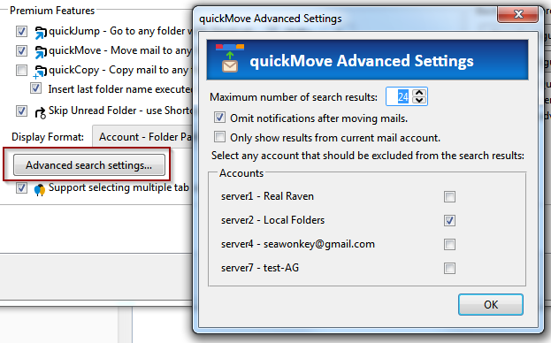 - [issue 103]
quickMove now also supports copying folders. To copy a folder, hold down the CTRL key while you drop it
on the quickMove button. Queued folders are now also properly listed in the quickMove menu:
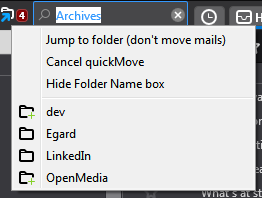
You can use this panel for a number of functions, such as not showing the unread status or excluding a folder (and optionally also its subfolders) from the quickMove search results. You can also prefill a different from address and to address when writing new mails. To display, right-click any tab and select"Tab-secific Properties" from the QuickFolders commands submenu. - Improved layout of numeric inputs in Settings dialog.
- [issue 117] Added color picker for text color in tab-specific properties.
- [issue 115] Fix restoring of config values. Some general / layout settings were not restored properly even when they were saved during backup.
- [issue 116]
Custom Text color in tab-specific is not set on tab.
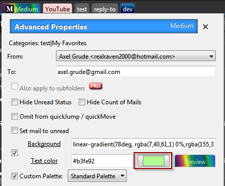 - Regression in 4.5 (fixed in 5.4.1) [issue 123] Fixed: An error in the French translation leads to the Settings screen not loading.
- [issue 115] Fixed: Restore does not load some general / layout setting.
-
[issue 114] Make QuickFolders compatible with Thunderbird beta 88.0b1
- Fixed: Support Pages did not open anymore as content Tabs have a different parameter set.
- Fixed: layout of advanced tab properties broken due to deprecated grid element.
- Fixed: Copy / Move folders uses new MailServices.copy object
- 5.4.2: bumped max version to 88.0b2 so current beta users can keep testing QuickFolders.
Removed legacy iterators for folders
If you find more regressions associated with Thunderbird 86 or higher, please report them at issue 114 linked above.
Improvements
Bug Fixes
Thunderbird 78 Regressions, Tb 88 and beyond
- Added quickMove advanced settings panel for the following new features:
-
Version 5.3 - 23/02/2021
- [issue 106] Thunderbird 78 regression: backup did not save general / advanced / layout settings.
-
[issue 108] Thunderbird 78 regression: Some changes in options window were ignored and not stored.
Also, many layout settings were not updating immediately through the User Interface, because of broken instant apply settings.
Settings that could not be changed from the options screen:
Premium / quick move display format
General / Message Navigation / Go to next unread mail -
[issue 111]
Paint Mode stopped working in Thunderbird 78. You can now use Paint Mode again from the
QuickFolders tools menu to change the colors of multiple tabs. (For best results use the flat style theme).
Activate paint mode,
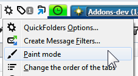
then select a color from the palette and click on the tabs you want to change:
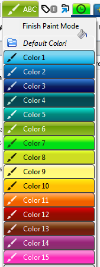The colors displayed depend on the selected "Palette for Colored Tabs" which is a global setting and offers 3 choices (Standard, Pastel and Night Vision for dark themes). -
[issue 88]
Fixed highlighting of drop targets when dragging mails into a subfolder.
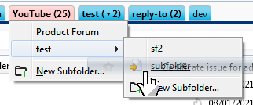 - [issue 82] Improved sorting of search results during quickMove / quickJump. The results are now sorted mainly based on alphabetical order (with boosts for folder names that start with the searched text and completely matching the search text). As before, partial strings are only matched from a length of at least 3 letters.
-
[issue 109]
Mark Messages read in Folder and the subfolders recursively did not display as expected.
This additional menu item that can be used to set all mail in subfolders to read was only displayed if the actual folder of the tab itself had no unread emails, and only child folders had them. Configure this command in QuickFolders settings / Advanced / Menu Configuration / Mail Commands:
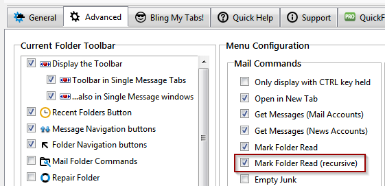 - [issue 37] When no match is found using the "/" in quickMove box, display "No matching parent folders!" instead of "..."
- [issue 101] If multiple categories are selected, closing QuickFolders settings reverts to "Show All".
- [issue 107] Restoring general / layout Settings only works if option for restoring folders also active.
- [issue 110] "Tab-specific Properties" overwrites To Address when clicking Write from Address Book.
- [issue 112] Reading List menu - Add current Item not working
-
[issue 114] Make QuickFolders compatible with Thunderbird beta 86.0b3
If you find more regressions associated with Thunderbird 86 or higher, please report them at issue 114 linked above.
Removed grids from options screen to suport Thunderbird 86 and higher.
Using renamed function FtvItem for creating Recent folders list.
Thunderbird 78 Regressions
Improvements
Other Bug Fixes
-
Version 5.2 - 22/01/2021
-
[issue 75]
- Support moving folders with the quickMove function. You can now move one or multiple folders by dragging them
from the tree to the quickMove button or hitting Shift+M (with a Pro License) while the folder tree is highlighted.
Up until now, you could only move folders by holding Shift and dragging to a QuickFolders tab, which was a significant limitation.
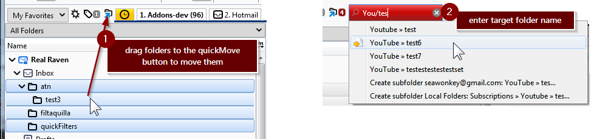 -
[issue 92]
- do not overwrite 'To address' from advanced tab properties when replying to an email!
With QuickFolders Pro a to address can be auto-populate in the advanced per-folder settings. This should not happen when replying to an email; from no on it will only populate when writing a new or forwarding mails:
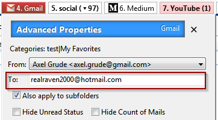 - [issue 94] - Tb78: Tab-specific properties displayed in incorrect screen position.
- [issue 23] Fixed: quickMove aborts with "Nothing to do: Message is already in folder" if the first mail in the selection is already in target folder. This may happen if you drag mails from a multi-folder view such as a search results window. It can also happen if you execute the quickMove command after a while and you (or a filter) have moved some of the mails to the target folder already.
- [issue 96] Drag and drop issue in Thunderbird 85 beta. Although I fixed this particular issue I make no guarantees for any functionality if you are using beta versions. I can only support the current ESR version Thunderbird 78.1 - 78.* fully,
Improvements
Bug Fixes
-
[issue 75]
- Support moving folders with the quickMove function. You can now move one or multiple folders by dragging them
from the tree to the quickMove button or hitting Shift+M (with a Pro License) while the folder tree is highlighted.
-
Version 5.1 - 11/12/2020
- In order to maintain full functionality for the next 12 months forward, QuickFolders had to be rewritten as a mail extension with experimental API, which will require full permissions on installation. As regards being allowed to do stuff, it is actually not different with any classic Add-on: they always had full access to all functions within Thunderbird. The modern mail extensions will have much more tightly managed permissions - eventually QuickFolders will also use this more modern approach - but the APIs for this have to be created and accepted by Mozilla first. This means a lot of ongoing work for the nexty 12 months forward - please support this with a license or donation:
- You can buy a license here. This is the preferred way of funding all the ongoing work and improvements.
- If you are not ready for a license you can also donate from here
Thunderbird 78 Conversion
- [issue 72] Fixed: Category "_Uncategorized" erratically showed all categories after moving a folder to another category
- [issue 76] Fixed: Recent Folders List is not updated until Thunderbird is closed and reopened
- [issue 80] Fixed: Recent Folders list not updated when moving email using drag and drop to the folder tree. I have made the updating of this folder time stamp somewhat more aggressive, but avoiding to add folders like Inbox, Sent, Archives, Drafts, Junk, Trash and Templates because they would always end up on top.
-
[issue 79]
Fixed: Drag over color + Dropmarkers when reordering Tabs not working
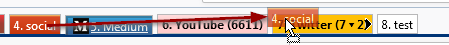
This was caused by an experimental style selector [-moz-drag-over] which has been now removed by Mozilla due to little take-up of the HTML community. I had to rewrite these parts using pure JavaScript. - [issue 81] Fixed: Current Folder Toolbar display - text is always black
-
[issue 84]
Fixed: Can't drag envelope icon in Navigation bar (a.k.a. Current Folder) to a folder / QuickFolder drop target.
Also the Navigation Bar is hidden if multiple mails or a thread is selected.

Drag envelope icon to move the currently selected mails to these targets, or into the folder tree if needed. - In the dialog "change order of tabs" the Up and Down labels on the buttons were not rendered for some yet unknown reason - this is now worked around by removing the button styling from these elements
- Hide option to extend license if it is already more than 1 year into the future.
- Hide popup screen for licensed users who have > 40 days left on their license
- Improve legibility of dropdown items in themed QuickFolders options dialog. Especially affects users of dark themes.
- Removed Encryption test code from options.js
- validateFilterTargets moved to other module to avoid console errors.
- Improved reopening any support sites already open in a tab by jumping to the correct place if necessary.
Bug Fixes
Improvements
Miscellaneus
-
Version 5.0 - 17/11/2020
This is the new version of QuickFolders whis is fully compatible with Thunderbird 78.
- In order to maintain full functionality for the next 12 months forward, QuickFolders had to be rewritten as a mail extension with experimental API, which will require full permissions on installation. As regards being allowed to do stuff, it is actually not different with any classic Add-on: they always had full access to all functions within Thunderbird. The modern mail extensions will have much more tightly managed permissions - eventually QuickFolders will also use this more modern approach - but the APIs for this have to be created and accepted by Mozilla first. This means a lot of ongoing work for the nexty 12 months forward - please support this with a license or donation:
- You can buy a license here. This is the preferred way of funding all the ongoing work and improvements.
- If you are not ready for a license you can also donate from here
Thunderbird 78 Conversion
- Removed backwards compatible (shim) code and all code implementing cross-compatibiliy for SeaMonkey and Postbox. The code base had to be forked into a new branch, so if I backport bug fixes this will double my work for the legacy Thunderbird users.
- [issue 35] "Skip Unread Folder" hides "Add star" function... the Shortcut for skipping unread folders works even without pressing the Shift key
-
New icon layout base on the new Photon Design System for Thunderbird. The fantastic new Icon conversion was kindly and expertly done by Richard Paenglab.
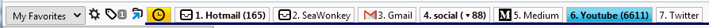The Navigation Bar (current folder toolbar) has also been redesigned:
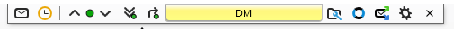Apart from that, all menu configuration as well as theming options and colors for the QuickFolders Tabs are still available:
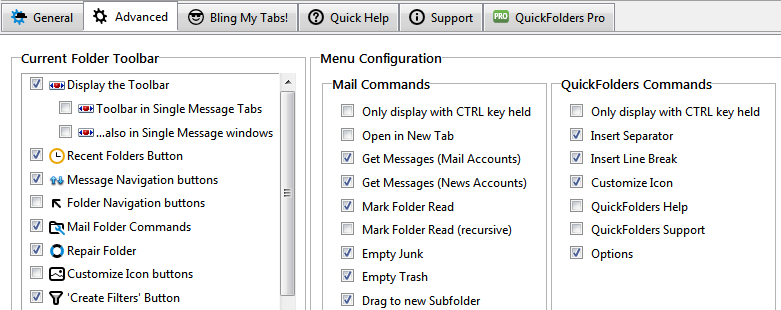Folder tree icons can also still be overwritten with external icons (here is a small icon collection for QuickFolders Pro users)
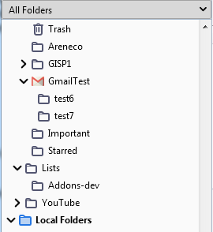 - Removed nsIRDFService dependencies
- rewrote preference bindings in all dialogs
- Added new Thunderbird 78 compatible Icons (svg)
- rewrote search algorithm for missing mails in reading list - clicking on a missing mail there brings up a search dialog. Unfortunately this was not populated with meaningful search conditions
- Klaus Buecher (@Opto) did the initial conversion of all XUL interface and fixed some bugs. John Bieling (from the Thunderbird team) helped with the WindowLoader implementation and fixing the broken preferences. Many thanks to both of themn for their fantastic work!
Changes / Work Items
- Any dragover styling (special color, dropmarkers when moving tabs around) is currently broken - this is caused by an experimental style selector which has been now removed by Mozilla due to little take-up of the HTML community. We will need to recode these parts using JavaScript.
Known issues
-
Older Versions
The version history for 2.13 and older can be found here.
Older versions (for versions of Thunderbird before 91.0) are listed here
Contact Me Directly
The quickest way to contact me (apart from filing a bug report): Right-click the QuickFolders toolbar, select QuickFolders support, then click the last button:
Or click below to send an email
My other Extensions - highly recommended
quickFilters
quickFilters (Thunderbird) Quickly generate mail filters on the fly, by dragging and dropping mails and analyzing their attributes.
SmartTemplates
SmartTemplates offers an easy way to customize Thunderbirds default quote header by using templates. Templates can be created for every account as well as for global settings (for all email accounts).
Zombie Keys
Zombie Keys for Firefox / SeaMonkey ;
Zombie Keys for Thunderbird / Postbox
Entering European languages (which include diacritics (accented characters, diaeresis, umlauts, etc.), ligatures, the Euro sign, etc.) into Mozilla applications using a non-native keyboards doesn't have to be a pain any more!